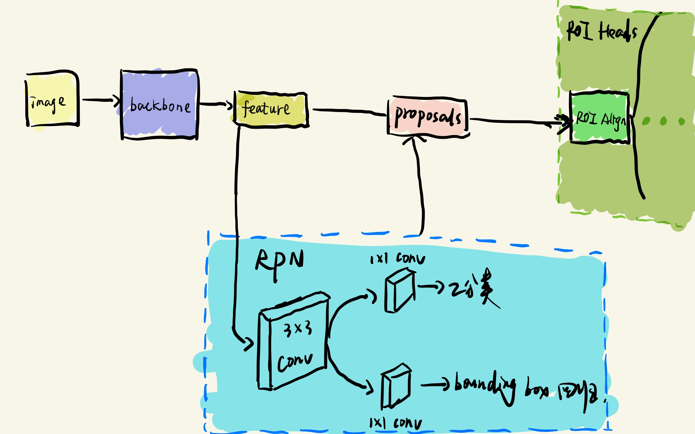

前言
上面我们介绍了build_bone()函数，了解到了backbone的构造过程，本篇我们开始介绍RPN的构造过程。build_rpn()函数是在your_project/maskrcnn_benchmark/modeling/rpn/rpn.py文件中。
我们知道RPN过程是提取Proposals的过程，即判断哪一个区域可能含有需要检测的物体（二分类，有或无，并不判断具体是什么类别的物体），以及该物体的bounding box，具体的内容可以看相关Faster-RCNN论文，本篇论文不做具体阐述，简单的RPN细节，如下图所示：

rpn.py中总共包含有：
RPNHeadConvRegressor类、RPNHeadFeatureSingleConv类、RPNHead类、RPNModule类、build_rpn（）函数这五个部分，下面就这五个部分一一介绍：
一、RPNHeadFeatureSingleConv类
参照我上面画的RPN结构示意图，Backbone提取的图像特征进入RPN模块之后，首先通过一个3x3Conv提取特征，RPNHeadFeatureSingleConv类就是这个作用：
# RPN中用来提取特征的单个卷积层head模块
class RPNHeadFeatureSingleConv(nn.Module):
"""
Adds a simple RPN Head with one conv to extract the feature
"""
def __init__(self, cfg, in_channels):
"""
Arguments:
cfg : config
in_channels (int): number of channels of the input feature
"""
super(RPNHeadFeatureSingleConv, self).__init__()
# 3*3卷积用于提取特征
self.conv = nn.Conv2d(
in_channels, in_channels, kernel_size=3, stride=1, padding=1
)
# 参数初始化
for l in [self.conv]:
torch.nn.init.normal_(l.weight, std=0.01)
torch.nn.init.constant_(l.bias, 0)
# 不改变输入输出的特征维度
self.out_channels = in_channels
def forward(self, x):
assert isinstance(x, (list, tuple))
# 因为batch size的缘故使用这种方式进行计算
x = [F.relu(self.conv(z)) for z in x]
# 返回值为经过3x3CONV提取的特征
return x二、RPNHeadConvRegressor类
在经过了3x3CONV操作之后，就要进行bounding box的回归和2分类任务（有物体还是没有物体）,这便是RPNHeadConvRegressor类的作用：
# RPN中用来进行回归和分类的head模块
class RPNHeadConvRegressor(nn.Module):
"""
A simple RPN Head for classification and bbox regression
"""
def __init__(self, cfg, in_channels, num_anchors):
"""
Arguments:
cfg : config
in_channels (int): number of channels of the input feature
num_anchors (int): number of anchors to be predicted
"""
super(RPNHeadConvRegressor, self).__init__()
# 使用1*1的卷积将输入的feature的维度转化为预测的anchors的数目（2分类）
self.cls_logits = nn.Conv2d(in_channels, num_anchors, kernel_size=1, stride=1)
# 使用1*1的卷积将输入的feature的维度转化为预测的anchors*4的数目（回归对应到4个坐标点，虽然四个值不是对应四个点，但是可以通过函数转换过去）
self.bbox_pred = nn.Conv2d(
in_channels, num_anchors * 4, kernel_size=1, stride=1
)
# 初始化 cls__logits和 bbox_pred
for l in [self.cls_logits, self.bbox_pred]:
torch.nn.init.normal_(l.weight, std=0.01)
torch.nn.init.constant_(l.bias, 0)
def forward(self, x):
assert isinstance(x, (list, tuple))
logits = [self.cls_logits(y) for y in x]
bbox_reg = [self.bbox_pred(y) for y in x]
# 返回值为Proposals（即每一个anchor的二分类结果以及它的坐标偏移量）
return logits, bbox_reg三、RPNHead类
其实就是把RPNHeadConvRegressor类和RPNHeadConvRegressor类中的相关操作，整合到一个类当中（先进行3x3CONV 然后进行anchor的bounding box回归和二分类）:
# 单卷积层的RPN head（里面包含单卷积head 和 分类回归head）
# 通过注册器在RPN_HEADS中注册该RPNHead类 方便后面通过字典的形式进行获取
@registry.RPN_HEADS.register("SingleConvRPNHead")
class RPNHead(nn.Module):
"""
Adds a simple RPN Head with classification and regression heads
"""
def __init__(self, cfg, in_channels, num_anchors):
"""
Arguments:
cfg : config
in_channels (int): number of channels of the input feature
num_anchors (int): number of anchors to be predicted
"""
super(RPNHead, self).__init__()
# 单层3*3卷积特征提取
self.conv = nn.Conv2d(
in_channels, in_channels, kernel_size=3, stride=1, padding=1
)
# 2分类
self.cls_logits = nn.Conv2d(in_channels, num_anchors, kernel_size=1, stride=1)
# bbox回归
self.bbox_pred = nn.Conv2d(
in_channels, num_anchors * 4, kernel_size=1, stride=1
)
for l in [self.conv, self.cls_logits, self.bbox_pred]:
torch.nn.init.normal_(l.weight, std=0.01)
torch.nn.init.constant_(l.bias, 0)
def forward(self, x):
logits = []
bbox_reg = []
for feature in x:
t = F.relu(self.conv(feature))
logits.append(self.cls_logits(t))
bbox_reg.append(self.bbox_pred(t))
return logits, bbox_reg四、RPNModule类
总的来说上面都是介绍了RPN（Region Proposal Network）的网络结构相关内容，经过RPNHead类得到也是anchors的分类结果和anchors坐标的回归结果，但是并没有涉及应该使用哪些anchors（我们将RPN分类结果为：“有物体” 的anchors，称之为Proposals）用于训练？在训练过程如何进行loss的计算？
而RPNModule类就是将上述提到问题都进行解决，然后整合的一个模块。下面是RPNModule中重点的几个函数，以及它们的作用：
make_anchor_generator（）：为每一个像素点生成anchor（每一个像素点一般都会生成9个anchors）
make_rpn_postprocessor（）：挑选用于训练和测试过程的anchors，并返回最后筛选得到的proposals和用于训练的标签。
make_rpn_loss_evaluator（）：用于计算RPN这一部分的loss。
class RPNModule(torch.nn.Module):
"""
Module for RPN computation. Takes feature maps from the backbone and outputs
RPN proposals and losses. Works for both FPN and non-FPN.
通过注释我们就可以明白：
该模块的输入是backbone提取得到的feature
输出是RPN的proposals和loss值
"""
def __init__(self, cfg, in_channels):
super(RPNModule, self).__init__()
self.cfg = cfg.clone()
# 生成anchors（anchors具体是如何生成的，这里就不介绍了）
anchor_generator = make_anchor_generator(cfg)
# 通过注册器得到cfg中对应的rpn_head
rpn_head = registry.RPN_HEADS[cfg.MODEL.RPN.RPN_HEAD]
head = rpn_head(
cfg, in_channels, anchor_generator.num_anchors_per_location()[0]
)
# 边框编码器， 主要用于计算边框偏差以及利用偏差计算预测框（就是预测的四个点并不是坐标框的四个点，需要通过函数转化一下）
rpn_box_coder = BoxCoder(weights=(1.0, 1.0, 1.0, 1.0))
# 指定获得预测边框的工具类，将RPN得到的box进行后续处理，用作下一个阶段head的输入
# 在RPN损失计算部分的anchors和用于后续阶段的Proposals对应的anchors 并不完全一样
box_selector_train = make_rpn_postprocessor(cfg, rpn_box_coder, is_train=True)
box_selector_test = make_rpn_postprocessor(cfg, rpn_box_coder, is_train=False)
# 指定RPN误差计算的工具类
loss_evaluator = make_rpn_loss_evaluator(cfg, rpn_box_coder)
self.anchor_generator = anchor_generator
self.head = head
self.box_selector_train = box_selector_train
self.box_selector_test = box_selector_test
self.loss_evaluator = loss_evaluator
def forward(self, images, features, targets=None):
"""
Arguments:
images (ImageList): images for which we want to compute the predictions
features (list[Tensor]): features computed from the images that are
used for computing the predictions. Each tensor in the list
correspond to different feature levels
targets (list[BoxList): ground-truth boxes present in the image (optional)
输入：
images:图片的张量列表
features：backbone所提取的特征图
targets: 图片的ground truth标签
Returns:
boxes (list[BoxList]): the predicted boxes from the RPN, one BoxList per
image.
losses (dict[Tensor]): the losses for the model during training. During
testing, it is an empty dict.
返回值：
boxes：RPN预测的边框， 一张图对应一个边框列表（边框列表里面有很多边框）
losses：训练过程所对应的损失（如果是测试阶段这个地方就为空）
"""
# RPN head得到每一个像素点所对应的多个anchors回归偏量
以及anchors中是否含有物体的二分类结果（anchors）
# objectness是指二分类的结果
objectness, rpn_box_regression = self.head(features)
anchors = self.anchor_generator(images, features)
if self.training:
return self._forward_train(anchors, objectness, rpn_box_regression, targets)
else:
return self._forward_test(anchors, objectness, rpn_box_regression)
def _forward_train(self, anchors, objectness, rpn_box_regression, targets):
if self.cfg.MODEL.RPN_ONLY:
# When training an RPN-only model, the loss is determined by the
# predicted objectness and rpn_box_regression values and there is
# no need to transform the anchors into predicted boxes; this is an
# optimization that avoids the unnecessary transformation.
boxes = anchors
else:
# For end-to-end models, anchors must be transformed into boxes and
# sampled into a training batch.
# 需要挑选出一部分box（Proposals）用于 下一个阶段的训练
with torch.no_grad():
boxes = self.box_selector_train(
anchors, objectness, rpn_box_regression, targets
)
# RPN的loss是计算了所有的anchors的loss，而不是仅仅是用于下一阶段boxs（Proposals）的loss
loss_objectness, loss_rpn_box_reg = self.loss_evaluator(
anchors, objectness, rpn_box_regression, targets
)
losses = {
"loss_objectness": loss_objectness,
"loss_rpn_box_reg": loss_rpn_box_reg,
}
return boxes, losses
def _forward_test(self, anchors, objectness, rpn_box_regression):
boxes = self.box_selector_test(anchors, objectness, rpn_box_regression)
if self.cfg.MODEL.RPN_ONLY:
# For end-to-end models, the RPN proposals are an intermediate state
# and don't bother to sort them in decreasing score order. For RPN-only
# models, the proposals are the final output and we return them in
# high-to-low confidence order.
# RPN-ONLY模型boxes就是最后的输出，对其进行排序
inds = [
box.get_field("objectness").sort(descending=True)[1] for box in boxes
]
boxes = [box[ind] for box, ind in zip(boxes, inds)]
return boxes, {}如果想要读懂RPNModule类具体干了一些啥，就需要先阅读：
在your_project/maskrcnn_benchmark/modeling/rpn/inference.py中的make_rpn_postprocessor()函数
以及your_project/maskrcnn_benchmark/modeling/rpn/loss.py中的make_rpn_loss_evaluator()函数 (make_anchor_generator就不做介绍了)：